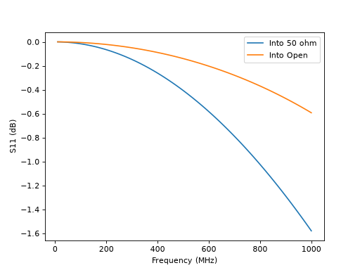
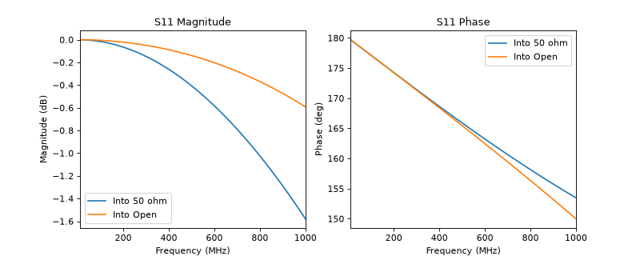

Cascading and Terminating
For simple circuits, models can be built “compositionally” by combining multiple components together. In this example, we construct and plot different RLC networks to demonstrate this approach.
Construction using Operators
A simple example of compositional modeling is cascaded (series) elements. In ParamRF, this can be done using the ** operator for a chain of 2N-port networks:
import pmrf as prf
from pmrf.models import ShuntResistor, ShuntInductor, ShuntCapacitor
res, ind, cap = ShuntResistor(R=100.0), ShuntInductor(L=2.0e-9), ShuntCapacitor(C=1.0e-12)
rlc = res ** ind ** cap
Note that, in the above example, no computation was done. Models are lazy, and are only evaluated when we pass them a frequency. To evaluate the model, we could extract its S-parameter matrix using pmrf.Model.s():
freq = prf.Frequency(10, 1000, 101, 'MHz')
smatrix = rlc.s(freq) # shape (nports, nports, nfreq)
s11 = smatrix[:,0,0]
ParamRF compiles pmrf.Model.s() just-in-time (JIT), and evaluates the batch of frequencies. We can also use the same ** operator for terminating any 2N port in an N port:
from pmrf.models import Open
open_model = Open()
rlc_terminated = rlc ** open_model
Lets compute the terminated S-parameters in decibels and plot them using matplotlib against the non-terminated ones:
import matplotlib.pyplot as plt
import jax.numpy as jnp
s11_db_term = rlc_terminated.s_db(freq)[:,0,0]
plt.plot(freq.f_scaled, 20*jnp.log10(jnp.abs(s11)), label='Into 50 ohm')
plt.plot(freq.f_scaled, s11_db_term, label='Into Open')
plt.xlabel('Frequency (MHz)')
plt.ylabel('S11 (dB)')
plt.legend()

For a list of built-in models and components, check out the pmrf.models module.
Construction using Classes
The above approach is purely syntactic sugar. We could have achieved the exact same results by explicitly constructing Cascade and Terminated models:
from pmrf.models import Cascade, Terminated
explicit_rlc = Cascade([res, ind, cap])
explicit_rlc_terminated = Terminated(explicit_rlc, open_model)
This emphasizes that models are purely containers, wrapping parameters, other models, or static metadata. This enables arbitrary nesting, providing a powerful foundation for modular modeling and design. This time we plot the magnitude in dB and phase in degrees directly using the built-in plot_xxx methods:
fig, axes = plt.subplots(1, 2)
fig.set_size_inches(10, 4)
axes[0].set_title('S11 Magnitude')
explicit_rlc.plot_s_db(freq, m=0, n=0, ax=axes[0], label='Into 50 ohm')
explicit_rlc_terminated.plot_s_db(freq, m=0, n=0, ax=axes[0], label='Into Open')
axes[1].set_title('S11 Phase')
explicit_rlc.plot_s_deg(freq, m=0, n=0, ax=axes[1], label='Into 50 ohm')
explicit_rlc_terminated.plot_s_deg(freq, m=0, n=0, ax=axes[1], label='Into Open')

This provides out-of-the box labels on the resultant graphs.